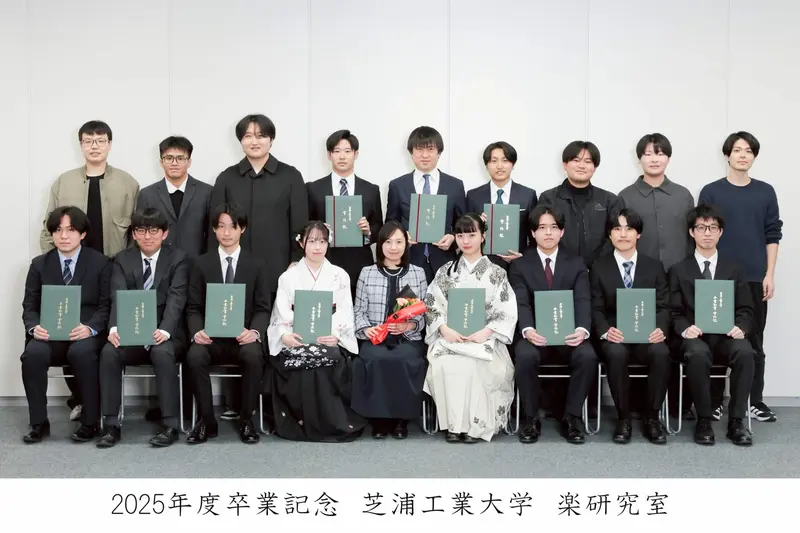

Sophoanthiraek Rath, Thiraek for short.
Tokyo now. Cambodia and Australia twice each before that.
Civil engineer in training, vibe coder by accident.By day I study how people move through cities at Shibaura Institute of Technology. In my free time I describe app ideas to Claude.
About
I'm a Cambodian civil engineering student in my fourth year at Shibaura Institute of Technology in Tokyo. I research how cities move in the Mobility & Infrastructure Laboratory. After hours I vibe-code apps: I come up with the ideas and Claude writes the code.
Currently: finishing my thesis and preparing for grad school.
- Full name
- Sophoanthiraek Rath. Thiraek to most, Billy to some.
- Based in
- Tokyo, Japan, after Phnom Penh and Sydney.
- From
- Cambodia. Khmer is my first language.
- Studying
- B.Eng. (Honours) in Civil Engineering: Infrastructure & Mobility, 4th year, Shibaura Institute of Technology
- Lab
- Mobility & Infrastructure Laboratory, with Prof. Yiping Le as my supervisor
- Research
- About 3 years of transport and urban mobility
- Graduating
- March 2027
What do I go by?
Billy
Journey
Where I've studied so far: Melbourne, Cambodia, Sydney and Tokyo, with a master's in Japan next.
-
Leg 1 of 5 · PNH → MEL
Melbourne
I was born in Cambodia and moved to Australia when I was very young. My first school was kindergarten in Glen Waverley.
-
Leg 2 of 5 · MEL → PNH
Cambodia
I moved back when I was 5 and grew up at Zaman International School (now Paragon International School) and stayed until Year 10.
-
Leg 3 of 5 · PNH → SYD
Sydney
Back to Australia. I finished high school in Sydney, then briefly started a diploma at UTS before moving to Japan.
-
Leg 4 of 5 · SYD → TYO
Tokyo
A bachelor's in Civil Engineering at Shibaura Institute of Technology, plus a desk in the Mobility & Infrastructure Laboratory.
-
Leg 5 of 5
Next
I'm applying for a master's in Japan, starting April 2027. Wish me luck.
Research
Would you ride in a car with no driver? I ask people in four countries: the US, France, Japan and China. I also map how Phnom Penh has grown along its main roads using satellite images.
-
Public acceptance of shared autonomous vehicles: a cross-national comparison of the United States, France, Japan, and China
SubmittedICITE 2026, University of Hong Kong
-
Trends in public acceptance of autonomous vehicles: a systematic review of global research from 2019 to 2023
SubmittedTransportation Research Interdisciplinary Perspectives
-
Monitoring urban expansion of Phnom Penh along six national road corridors, 2005–2025
In progressUrban Research Competition, Cambodia's Ministry of Land Management (MLMUPC) and UN-Habitat, 2026
Other research
- Tsunami risk in ShizuokaMapped elderly vulnerability in ArcGIS and found 12,000+ residents who need a better evacuation plan. Spring 2023.
- Tsukuba Express vs. Rinkai LineHow two train lines shape the land around them, using 1.5 km buffers and transit-oriented development analysis. Fall 2023.
- Train, car or maglev?A multinomial logit model on the Swissmetro dataset, in Python. Fall 2024.
- AV adoption in JapanDesigning the survey and the predictive model for who will ride. Spring 2025 to now.
Lab rotations where I helped out: the SANTO companion robot (Fusion 360 and a lot of 3D printing), an assistive device for finger injuries, and how relaxed people feel in autonomous cars (VR + Unity).
Lab

My home base in Tokyo is the Mobility & Infrastructure Laboratory at Shibaura Institute of Technology, Toyosu Campus. Officially 楽研究室. Le Lab for short, after Prof. Yiping Le, who supervises me.
- What we do
- Support the movement of people and goods, and build a sustainable social foundation under it: transport, tourism, logistics and urban systems.
- What I do
- My autonomous vehicle papers and the Phnom Penh mapping project both started here.
- Also
- I'm a TA for Introduction to Transport Systems, then Mobility and Regional Development.
Experience
Outside research, I am a teaching assistant for transport classes and have interned at Cambodia's airports.
-
Teaching Assistant, Shibaura Institute of Technology
Sep 2024 to nowTokyo
-
Technical & Maintenance Intern, Cambodia Airports (SCA)
Jul to Aug 2025Phnom Penh
Community
CSAJ, the Cambodian Students' Association in Japan, looks after Cambodian students all over the country: Kanto, Kansai, Nagoya, Hiroshima and Kyushu.
- My 2026 roles
- Public Relations member and Education member. Two teams at once.
- Doing PR
- I help with public relations and education for Cambodian students across Japan.
- Also made
- Their new website and the graduation posters.
Skills
Three lines: research, engineering tools and the languages I speak.
Research line
- Transport research
- Survey design
- ArcGIS & Earth Engine
- Python & Biogeme
- Remote sensing
Engineering line
- ANSYS
- SolidWorks
- Fusion 360
- Unity VR
- Photoshop
Language line
- Khmer (native)
- English (native-ish)
- Japanese (basic conversation)
Off the clock
- MMA, kickboxing, grappling
I'm addicted to combat sports. I train at Fighting Glanz Ikebukuro, my gym (opens in a new tab).
- Video games
Dota 2 and UFC 5. My Dota 2 playtime is creeping up on 10,000 hours.
- Superheroes
Marvel and DC, both. At one point I spent hundreds on physical comic books.
- Learning Japanese
Every day. Getting better, I hope.
- Travelling
See the map above.
- Vibe coding
I describe app ideas to Claude and test them until they work.
Ask me about
- Why Tokyo trains beat Sydney trains
- How I vibe coded a business
- MMA and combat sports
- Khmer food spots in Tokyo
If you made it to this website, you probably already have my Facebook. Message me there.